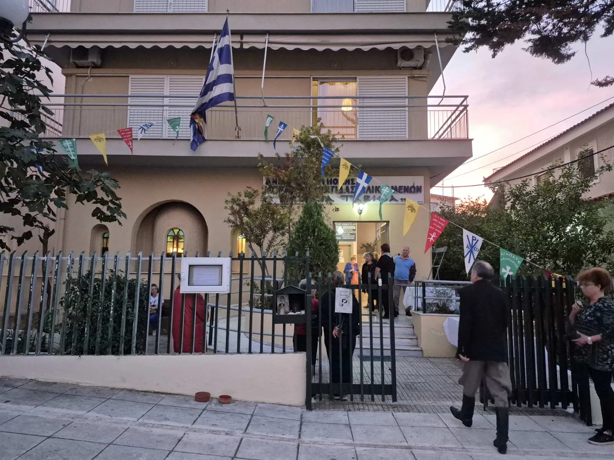

Κυριακή
- Όρθρος & Θεία Λειτουργία
- 08:00 – 10:30
Δήμος Ηλιούπολης
«Ταβιθά, ἀνάστηθι» (Πράξ. 9,40)
Σας καλωσορίζουμε στο παρεκκλήσι μας. Ελάτε να προσευχηθούμε μαζί στις ιερές ακολουθίες και να γνωρίσετε την κοινότητά μας.

Ο βίος της
Η Ταβιθά —στα ελληνικά Δορκάς— ήταν μαθήτρια του Κυρίου στην Ιόππη. Οι Πράξεις των Αποστόλων τη μνημονεύουν ως γυναίκα «πλήρη ἀγαθῶν ἔργων καὶ ἐλεημοσυνῶν»: έραβε χιτώνες και ενδύματα για τις χήρες και τους φτωχούς της πόλης.
Όταν ασθένησε και εκοιμήθη, οι μαθητές κάλεσαν τον Απόστολο Πέτρο από τη γειτονική Λύδδα. Εκείνος προσευχήθηκε και, με τα λόγια «Ταβιθά, ἀνάστηθι», την ανέστησε. Το θαύμα έγινε γνωστό σε όλη την Ιόππη και πολλοί πίστεψαν στον Κύριο.
Η μνήμη της τιμάται στις 25 Οκτωβρίου.
«Ἐν Ἰόππῃ δέ τις ἦν μαθήτρια ὀνόματι Ταβιθά, ἣ διερμηνευομένη λέγεται Δορκάς· αὕτη ἦν πλήρης ἀγαθῶν ἔργων καὶ ἐλεημοσυνῶν ὧν ἐποίει.»
Πράξεις των Αποστόλων 9,36
Λατρευτική ζωή
Περίοδος λειτουργίας: από 14 Σεπτεμβρίου έως και 15 Ιουνίου.
Το παρεκκλήσι πανηγυρίζει στη μνήμη της Αγίας Ταβιθά.
Φωτογραφίες
Επίσκεψη